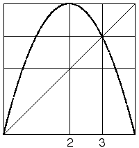
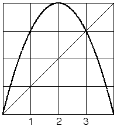

| 16. One choice for bin boundary 3 is the non-zero fixed point, because then the graph above bin 3 (between bin boundaries 2 and 3) is all of bin 4 (between bin boundary 3 and 1). |
|  |
| A choice for bin boundary 1 is the intersection of the graph and bin boundary 3 on the y-axis. Then the graph above bin 1 (between 0 and bin boundary 1) is all of bins 1, 2, and 3, and the graph above bin 2 (between bin boundaries 1 and 2) is all of bin 4. |
| This is a Markov partition of [0,1] for this return map. |
|  |
Return to Homework 8 Practice.